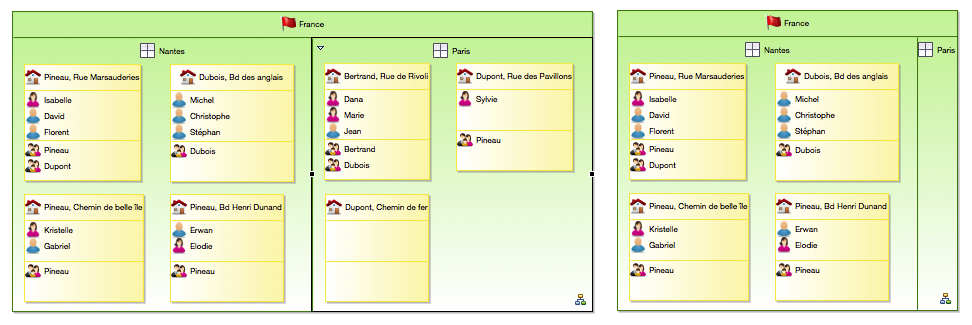
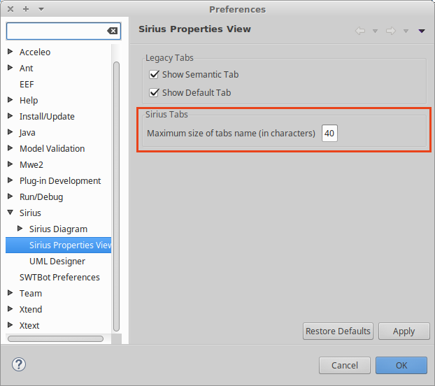
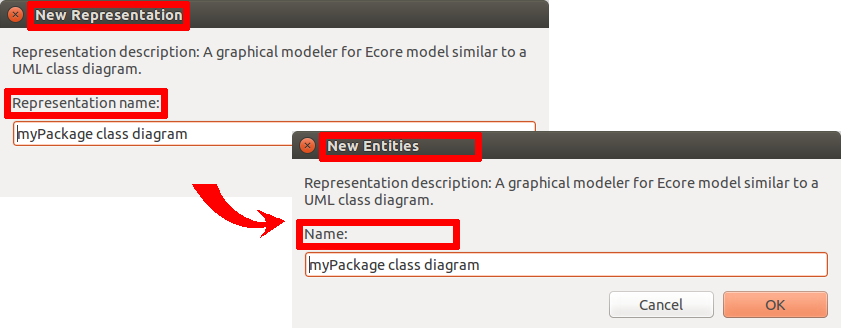
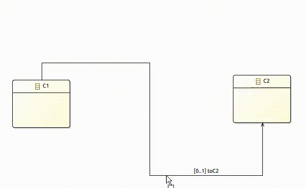
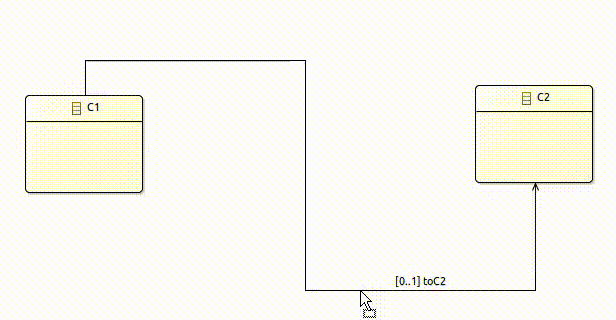
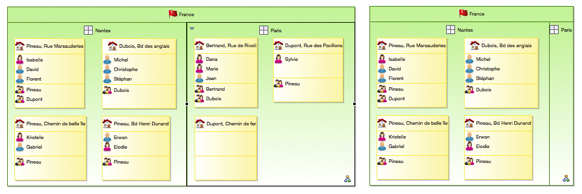

This document contains the release notes for recent major releases of Sirius. See also the release notes from previous versions for details about older releases.
org.eclipse.sirius.ext.gmf.runtime.gef.ui.figures.SiriusDefaultSizeNodeFigure has been added in plugin
org.eclipse.sirius.ext.gmf.runtime. The goal of the class is to workaround a
GMF bug. So if you have created class which inherits from
org.eclipse.gmf.runtime.gef.ui.figures.DefaultSizeNodeFigure, you must now use the new
SiriusDefaultSizeNodeFigure instead.
org.eclipse.sirius.diagram.ui
org.eclipse.sirius.diagram.ui.business.api.query.ViewQuery.SPECIFIC_STYLES &
org.eclipse.sirius.diagram.ui.business.api.query.ViewQuery.VERTICAL_ALIGNMENT have been added to retrieve the initial label alignment of Notes from the Palette (see
user-visible changes ). Currently the vertical alignment can not be changed (potential new feature later).
org.eclipse.sirius.ui
org.eclipse.sirius.ui.tools.api.views.modelexplorerview.resourcelistener.DefaultModelingProjectResourceListener.isPotentialSemanticResource2(IFile) has been added but directly in deprecated. Indeed, it is a part of a temporary fix, waiting for a more impacting fix made in Sirius 5.0.0. This method will be removed in Sirius 5.0.0. It is not intended to be used by clients.
org.eclipse.sirius.tests.junit.support
org.eclipse.sirius.tests.support.api.TestsUtil.setTargetPlatform() has been added to allow to load a PDE target platform according to all known OSGi bundles. It is usefull to compile a plug-in in the execution runtime of the tests.
org.eclipse.sirius.tests.swtbot.support
mouseDragWithKey(int, int, int, int, int) in classes
org.eclipse.sirius.tests.swtbot.support.api.editor.SWTBotSiriusDiagramEditor,
org.eclipse.sirius.tests.swtbot.support.api.editor.SWTBotSiriusGefViewer and
org.eclipse.sirius.tests.swtbot.support.api.widget.SWTBotSiriusFigureCanvas. This allows to correctly wait the end of the drag’n’drop.
final AtomicBoolean dragFinished = new AtomicBoolean(false);
editor.dragWithKey(start.x, start.y, endpoint.x, endpoint.y, SWT.F3, dragFinished);
// Wait that the drag is done (the async Runnable simulating the
// drag)
bot.waitUntil(new ICondition() {
@Override
public boolean test() throws Exception {
return dragFinished.get();
}
@Override
public void init(SWTBot bot) {
}
@Override
public String getFailureMessage() {
return "The drag'n'drop operation has not finished.";
}
});
// Wait that the figures are redrawn. In a fast environment, figures
// are not really redrawn and the rest of the test is not reliable.
SWTBotUtils.waitAllUiEvents();
A new preference named
Maximum size of tabs name is available in the Sirius Properties View preference page. This preference is used to shorten the tabs names when the default rules are used to render the properties view.

org.eclipse.sirius.diagram.ui.tools.api.format.SiriusFormatDataManagerWithMapping class has been added to handle copy/paste format with mapping information when an element target of a format pasting has many source diagram format corresponding to its key. In this case, we use the mapping information to get the more precise data format. And if no result matched, then we return the first found by using the key.
org.eclipse.sirius.diagram.ui.tools.api.format.SiriusFormatDataManagerWithMapping.getFormatData(FormatDataKey, RepresentationElementMapping) method has been added to retrieve during format pasting the data format corresponding to the given key and mapping when more than one result correspond to the key. If no result matches the mapping, then the first result found by using the key is returned.
org.eclipse.sirius.diagram.ui.tools.api.format.SiriusFormatDataManagerWithMapping.addFormatData(FormatDataKey, RepresentationElementMapping, AbstractFormatData) method has been added to allow data format manager to register data format with mapping information when copying format.
org.eclipse.sirius.diagram.ui.tools.api.format.SiriusFormatDataManager.getFormatData(FormatDataKey) It is replaced by
org.eclipse.sirius.diagram.ui.tools.api.format.SiriusFormatDataManagerWithMapping.getFormatData(FormatDataKey, RepresentationElementMapping) to better handle copy/paste format cases.
org.eclipse.sirius.diagram.ui.tools.api.format.SiriusFormatDataManager.addFormatData(FormatDataKey, AbstractFormatData) It is replaced by
org.eclipse.sirius.diagram.ui.tools.api.format.SiriusFormatDataManagerWithMapping.addFormatData(FormatDataKey, RepresentationElementMapping, AbstractFormatData) to better handle copy/paste format cases.
org.eclipse.sirius.table.business.api.helper.TableHelper.getEStructuralFeature(DLine, DColumn) method has been added to retrieve the EStructuralFeature associated to a table column.
UICallBack in which you can have an UI feedback letting you choose if you want to open the session anyway. Warning: if you choose to proceed, there is no guarantee that the resulting session will be usable. It may even lead to data loss or corruption; use at your own risk.
If a viewpoint has been defined with a more recent version of Sirius than the one you are using, the
ViewpointRegistry will not register it and a warning is logged in the error log view to inform the user.
displayExpression, if blank the result of the value expression will be used after a call to the method
java.lang.Object#toString().
preconditionExpression, which behaves in the same way as preconditions for mappings on representation descriptions.
fontSize and
labelFontSize have been renamed into
fontSizeExpression and
labelFontSizeExpression since both of them were already treated as expression.
Domain Class Expression in
DynamicMappingFor elements (in properties views definitions) has been renamed into
Iterable Expression.
org.eclipse.sirius.diagram.ui.layoutDataManager is deprecated. It is replaced by the new extension point
org.eclipse.sirius.diagram.ui.formatDataManager. The deprecated extension point will be removed in the next 5.0 Sirius major release. Several classes associated with this deprecated extension point are also deprecated (see Developer-Visible Changes for details).
org.eclipse.sirius.viewpoint.DView.getOwnedRepresentationDescriptors() has been added as a wrapper of the
DRepresentation. The
DRepresentationDescriptor is contained by the
DView and the
DRepresentationDescriptor have a reference to the
DRepresentation. In this step, the main impact is that the Sirius common navigator does not display the
DRepresentation anymore but the
DRepresentationDescriptor instead. All the actions and commands are then based on
DRepresentationDescriptor.
org.eclipse.sirius.viewpoint.DView.getOwnedRepresentations() has been removed. The
DRepresentation is now created as root element of the representations resource. The main impact is on the core of Sirius but also potentially on client Sirius customization. Each peace of code that makes the supposition that the
DView is the container of the
DRepresentation must be reworked. The code using methods in the following list may be concerned by the rework:
EObject.eContainer(). If the object is a
DRepresentation, its container is now null.
EcoreUtil.getRootContainer(xxx). The root container of a DDiagramElement is the
DRepresentation and not the
DAnalysis any more.
EcoreUtil.isAncestor(xxx). the
DView is not an ancestor of a
DRepresentation (or its content) anymore.
org.eclipse.sirius.business.api.query.DViewQuery.getLoadedRepresentations() replaces the removed
DView.getOwnedRepresentations() method. It provides all the loaded representations holds by a
DView. In this step, all that representations are always loaded as they are into the .aird resource.
org.eclipse.sirius.business.api.query.DViewQuery.getAllContentInRepresentations(final Predicate<? super EObject>) provides the content of a
DView according to a predicate.
org.eclipse.sirius.business.api.query.DRepresentationQuery.getRepresentationDescriptor() provides the
DRepresentationDescriptor which references the
DRepresentation.
org.eclipse.sirius.business.api.query.EObjectQuery.getDAnalysis() allows to retrieve a DAnalysis from a
DRepresentationElement
org.eclipse.sirius
org.eclipse.sirius.interpretedExpressionQueryProvider (with the associated new interface
org.eclipse.sirius.business.api.dialect.description.IInterpretedExpressionQueryProvider) allows external contribution of
IInterpretedExpressionQuery specific to some particular expression occurrences in the VSM. This is used in particular for VSM extensions which do not fit well into the hard-coded assumptions about
IInterpretedExpressionQuery. In Sirius 4.1, this is used to add completion and validation support for expressions used in properties views descriptions.
org.eclipse.sirius.business.api.migration.AirdResourceVersionMismatchException exception has been added to cancel Sirius session opening due to an .aird version mismatch, i.e. when one the of the loaded Representation resources is coming from a newer Sirius release.
org.eclipse.sirius.viewpoint.DView.getOwnedRepresentationDescriptors() has been added as the first step to save the DRepresentation in its own resource. In this step, the DRepresentationDescriptor life cycle is the same as the associated DRepresentation.
org.eclipse.sirius.business.api.dialect.command.RenameRepresentationCommand
org.eclipse.sirius.business.api.dialect.command.DeleteRepresentationCommand
org.eclipse.sirius.business.api.dialect.command.MoveRepresentationCommand
org.eclipse.sirius.business.api.dialect.command.CopyRepresentationCommand
getAvailableRepresentationDescriptions(Collection<Viewpoint>, EObject),
getAllRepresentationDescriptors(Session ),
getRepresentationDescriptors(EObject, Session) and
getRepresentationDescriptors(RepresentationDescription, Session ) have been added in
org.eclipse.sirius.business.api.dialect.DialectServices and implemented in
org.eclipse.sirius.business.api.dialect.AbstractRepresentationDialectServices. These methods are used, instead of their equivalent with DRepresentation, for every functionality which relies on
DRepresentationDescriptor instead of
DRepresentation such as actions, wizards or views.
org.eclipse.sirius.business.api.dialect.AbstractRepresentationDialectServices.isSupported(DRepresentationDescriptor) has been added because actions, wizards or views that were related to
DRepresentation are now related to
DRepresentationDescriptor.
org.eclipse.sirius.ui.business.api.dialect.DialectUIServices.canHandle(DRepresentationDescriptor) has been added because actions, wizards or views that were related to
DRepresentation are now related to
DRepresentationDescriptor.
org.eclipse.sirius.ui.business.api.dialect.DialectUIManager.canExport(DRepresentationDescriptor, ExportFormat) has been added because actions, wizards or views that were related to
DRepresentation are now related to
DRepresentationDescriptor.
org.eclipse.sirius.business.api.query.DRepresentationQuery.getRepresentationDescriptor() has been added to retrieve the
DRepresentationDescriptor that references the
DRepresentation.
org.eclipse.sirius.business.api.session.CustomDataConstants.DREPRESENTATION_DESCRIPTOR_FROM_DESCRIPTION and
org.eclipse.sirius.business.api.session.CustomDataConstants.DREPRESENTATION_DESCRIPTOR have been added. They are used to get or put
DRepresentationDescriptor in the model managed by the
Session through the
org.eclipse.sirius.business.api.session.SessionService.putCustomData(String, EObject, EObject) and
SessionService.getCustomData(String, EObject) methods.
org.eclipse.sirius.business.api.query.EObjectQuery.getDAnalysis() has been added to retrieve a DAnalysis from a
DRepresentationElement
org.eclipse.sirius.business.api.session.danalysis.DAnalysisSessionHelper.findContainerForAddedRepresentation(DAnalysis, DRepresentation) has been changed to
findDViewForRepresentationDescription(DAnalysis , final RepresentationDescription) because that API was previously badly defined.
org.eclipse.sirius.business.api.dialect.DialectServices.deleteRepresentation(DRepresentation, Session) has been changed to
deleteRepresentation(DRepresentationDescriptor, Session) because now the
DRepresentationDescriptor is the entry point to delete the
DRepresentation and itself.
DRepresentationDescriptor is now the entry point to move, control or uncontrol a
DRepresentation instead of the
DRepresentation itself. Accordingly, the return type or parameter of the followings have changed to switch from
DRepresentation to
DRepresentationDescriptor
org.eclipse.sirius.business.api.control.SiriusControlCommand
org.eclipse.sirius.business.api.dialect.command.MoveRepresentationCommand.MoveRepresentationCommand(Session, DAnalysis, Collection<DRepresentationDescriptor>)
org.eclipse.sirius.business.api.session.danalysis.DAnalysisSession.moveRepresentation(DAnalysis, DRepresentationDescriptor)
org.eclipse.sirius.business.api.session.danalysis.DAnalysisSessionHelper.updateModelsReferences(DView) has replaced
updateModelsReferences(DAnalysis, Iterator<DSemanticDecorator>) because it is more suited to the client needs.
org.eclipse.sirius.ui
org.eclipse.sirius.ui.business.api.dialect.HierarchyLabelProvider has been added to provide a generic label provider for VSM model element giving hierarchical label. This label provider replaces the one returned by deprecated method
DialectUIServices.getHierarchyLabelProvider().
AbstractSWTCallback provides a default implementation of
UICallBack.askSessionReopeningWithResourceVersionMismatch() method to give feedback about version mismatch and give the choice to reopen session despite a potential corruption.
org.eclipse.sirius.ui.tools.api.control.SiriusControlHandler.getRepresentationsToMove(Shell, Session, EObject) and
SiriusControlHandler.collectExistingRepresentations have been renamed to
getRepresentationDescriptorsToMove(Shell, Session, EObject) and
SiriusControlHandler.collectExistingRepresentationDescriptors. The return type of both that methods and
SiriusControlHandler.askUserWhichRepresentationToSplit has been changed to
DRepresentationDescriptor as
DRepresentationDescriptor is the entry point to work with a
DRepresentation instead of DRepresentation itself.
org.eclipse.sirius.ui.business.api.dialect.DialectUIServices.getHierarchyLabelProvider() has been deprecated in favor of generic label provider
HierarchyLabelProvider.
org.eclipse.sirius.diagram
org.eclipse.sirius.diagram.business.api.diagramtype.IDiagramDescriptionProvider.allowsCopyPasteFormat(DSemanticDecorator) has been added in replacement of
allowsCopyPasteLayout(DSemanticDecorator) that is now deprecated. This 2 methods must return the same result.
allowsCopyPasteLayout(DSemanticDecorator) will be removed in the new major version.
org.eclipse.sirius.diagram.ui
EDGE_SNAP_BACK has been added in class
org.eclipse.sirius.diagram.ui.tools.api.ui.actions.ActionIds. It corresponds to the new snap back label action id that is present on edges.
org.eclipse.sirius.diagram.ui.tools.api.layout.SiriusLayoutDataManager (and also in
org.eclipse.sirius.diagram.ui.tools.api.layout.AbstractSiriusLayoutDataManager):
applyFormat(IGraphicalEditPart): Apply the current format data (layout data and style data) to the given edit part.
applyStyle(IGraphicalEditPart): Apply the current style data to the give edit part.
org.eclipse.sirius.diagram.ui.tools.api.editor.tabbar.AbstractTabbarContributor:
createCopyFormatContribution(IDiagramWorkbenchPart): In replacement of
createCopyLayoutContribution(IDiagramWorkbenchPart) that is now deprecated.
createPasteFormatContribution(IDiagramWorkbenchPart): In replacement of
createPasteLayoutContribution(IDiagramWorkbenchPart) that is now deprecated.
org.eclipse.sirius.diagram.ui.tools.api.ui.actions.ActionIds:
COPY_FORMAT: Action contribution id for the copy format. It replaces the old
COPY_LAYOUT.
PASTE_FORMAT: Action contribution id for the paste format. It does not replace the old
PASTE_LAYOUT. The paste format paste the layout and the style. The paste layout only paste layout.
PASTE_STYLE: Action contribution id for the paste style.
org.eclipse.sirius.diagram.ui.business.api.query.NodeQuery.isDescendantOf(View) has been added to know if a view is a descendant of another view.
org.eclipse.sirius.diagram.ui.business.api.query.ViewQuery.getAncestor(int...) has been added to retrieve the first ancestor of the view, or itself, that has at least one of the visualID passed as parameter.
PREF_SHOW_LINK_EDGE_LABEL_ON_SELECTION has been added in
org.eclipse.sirius.diagram.ui.tools.api.preferences.SiriusDiagramUiPreferencesKeys. It corresponds to the preference shown in
Sirius/Sirius Diagram/Connections Eclipse preferences.
org.eclipse.sirius.diagram.ui.tools.api.figure.SiriusWrapLabelWithAttachment is a specific
SiriusWrapLabel that allows to show an attachment between the label and its edge.
org.eclipse.sirius.diagram.ui.tools.api.requests.StraightenToRequest, has been added to handle the new
Straighten to actions. The corresponding id has also been added:
org.eclipse.sirius.diagram.ui.tools.api.requests.RequestConstants.REQ_STRAIGHTEN.
org.eclipse.sirius.diagram.ui.tools.api.ui.actions.ActionIds:
STRAIGHTEN_TO_TOP: For
Straighten to top action,
STRAIGHTEN_TO_BOTTOM: For
Straighten to bottom action,
STRAIGHTEN_TO_LEFT: For
Straighten to left action,
STRAIGHTEN_TO_RIGHT: For
Straighten to right action.
org.eclipse.sirius.diagram.ui.tools.api.image.DiagramImagesPath for the icon path of the four new straighten actions.
org.eclipse.sirius.diagram.ui.tools.api.layout.AbstractSiriusLayoutDataManager is deprecated, use
org.eclipse.sirius.diagram.ui.tools.api.format.AbstractSiriusFormatDataManager instead.
org.eclipse.sirius.diagram.ui.tools.api.layout.ILayoutDataManagerProvider is deprecated, use
org.eclipse.sirius.diagram.ui.tools.api.format.IFormatDataManagerProvider instead.
org.eclipse.sirius.diagram.ui.tools.api.layout.LayoutDataHelper is deprecated, use
org.eclipse.sirius.diagram.ui.tools.api.format.FormatDataHelper instead.
org.eclipse.sirius.diagram.ui.tools.api.layout.LayoutDataKey is deprecated, use
org.eclipse.sirius.diagram.ui.tools.api.format.FormatDataKey instead.
org.eclipse.sirius.diagram.ui.tools.api.layout.SiriusLayoutDataManager is deprecated, use
org.eclipse.sirius.diagram.ui.tools.api.format.SiriusFormatDataManager instead.
org.eclipse.sirius.diagram.ui.tools.api.layout.SiriusLayoutDataManagerForSemanticElementsFactory is deprecated, use
org.eclipse.sirius.diagram.ui.tools.api.format.SiriusFormatDataManagerForSemanticElementsFactory instead.
HierarchyLabelProvider_elementWihtoutNameLabel has been removed from the
org.eclipse.sirius.diagram.ui plug-in’s
Messages class, and moved into the
org.eclipse.sirius.ui's
Messages class.
org.eclipse.sirius.ext.gmf.runtime
SiriusSnapFeedbackPolicy has been copied from
org.eclipse.sirius.ext.gef.editpolicies to
org.eclipse.sirius.ext.gmf.runtime.editpolicies. The old class in plug-in
org.eclipse.sirius.ext.gef is deprecated and will be removed in the next version.
org.eclipse.sirius.tests.junit.support
getRepresentationDescriptors(final String),
getRepresentationDescriptors(final String , final Session ) and
getRepresentationDescriptorFromRepresentation(DRepresentation) have been added in class
org.eclipse.sirius.tests.support.api.SiriusTestCase to adapt tests considering the
DView.ownedRepresentationDescriptors addition.
org.eclipse.sirius.tests.swtbot.support
mouseScrollWithKey(int, int, int, int), has been added in classes
org.eclipse.sirius.tests.swtbot.support.api.editor.SWTBotSiriusDiagramEditor,
org.eclipse.sirius.tests.swtbot.support.api.editor.SWTBotSiriusGefViewer and
org.eclipse.sirius.tests.swtbot.support.api.widget.SWTBotSiriusFigureCanvas to allow testing events occurring after a mouse scroll combined to a keyboard key pressed at a given absolute position.
org.eclipse.sirius.properties
domainClassExpression has been renamed into
iterableExpression.
fontSize and
labelFontSize have been renamed into
fontSizeExpression and
labelFontSizeExpression since both of them were already treated as expression.
org.eclipse.sirius.ui.properties
org.eclipse.sirius.ui.properties.api in order to help with the transformation of the description of custom widgets. The class
AbstractDescriptionConverter can now be used as superclass for all the converters. The classes
DefautDescriptionConverter,
DefautStyleDescriptionConverter and
DefautDescriptionWithInitialOperationConverter, now accessible, should handle most of the use cases.
org.eclipse.sirius.ecore.extender
org.eclipse.sirius.ecore.extender.business.api.permission.exception.LockedInstanceException.PERMISSION_ISSUE_MESSAGE has been modified. You should now use the
MessageFormat. Example:
LockedInstanceException.PERMISSION_ISSUE_MESSAGE + getText(lockedElements) must be replaced by
MessageFormat.format(LockedInstanceException.PERMISSION_ISSUE_MESSAGE, getText(lockedElements)).
org.eclipse.sirius.ecore.extender.business.api.accessor.ModelAccessorsRegistry has been refactored to avoid problem with
ModelAccessor lifecycle. The constructor has no longer a parameter.
IPermissionAuthority, the properties view will not be editable if this locked object is selected from the Model Explorer view.

Apply Appearance Properties action has been modified to use the last selected element as base style instead of the first one.
org.eclipse.sirius.properties.feature.feature.group): needed at runtime for deployed modelers which have properties views defined in their specification.
org.eclipse.sirius.specifier.properties.feature.feature.group): provides support for editing the configuration model directly inside the VSM editor and the specifier documentation.
Once this is done, you can find the actual documentation in the Sirius Specifier Manual, under the Properties View section.
%myUniqueKey in the VSM, and define the value in the
Viewpoint Specification Project's
plugin.properties (for the default value), or
plugin_XX.properties for locale
XX. The underlying mechanism is the same as for Eclipse/OSGi plug-ins, so translations can even be contributed by physically separate plug-in fragments. See
the corresponding section in the documentation for more details.
org.eclipse.sirius.ext.emf.edit.EditingDomainServices (from plug-in
org.eclipse.sirius.ext.emf.edit) has been added with a complete set of service methods to leverage most of the features of the “EMF Edit” framework, for example the various
Item Providers associated to semantic elements. See
the documentation for details.
filter() or
oclIsKindOf() requires to explicitly add the domain meta-models plug-ins to the dependencies of the
Viewpoint Specification Project. The documentation has been modified to recommend this.
EEnum attribute, like
labelFormat, worked with a value expression using a Java service returning a
EEnumLiteral. It is now forbidden. You must return an
Enumerator. The documentation about
Styles Customization now details this case.
BorderSizeComputationExpression migration has been corrected to recursively handle the sub container mappings. VSM created or migrated with Sirius 3.1.0, 3.1.1 or 3.1.2 might require a manual modification for the style descriptions of sub container mappings with border size computation equals to 0 as we cannot determine if they were added (or updated) after or before the migration: starting with Sirius 3.1.0, no border will be displayed for a 0 pixel value whereas with older version container always had at least a 1 pixel border.
ITabbarContributor through the
org.eclipse.sirius.diagram.ui.tabbarContributor extension-point. See the
developer documentation for more details.
org.eclipse.sirius.diagram.bundledImageShape extension-point. See the
developer documentation for more details.
org.eclipse.sirius
org.eclipse.sirius.ui.business.api.session.SessionEditorInput.getStatus() has been added to have the status about session opening, i.e. if it has been correctly opened, cancelled or an exception has occurred.
org.eclipse.sirius.business.api.helper.task.TaskHelper.buildTaskFromModelOperation(EObject, ModelOperation) has been added, which does not require to specify a
DRepresentation in the context. It allows the creation of a task which executes a behavior specified by
ModelOperations outside of the context of a specific representation, provided the
ModelOperations work in that context.
org.eclipse.sirius.viewpoint.description.TypedVariable has been created.
org.eclipse.sirius.viewpoint.description.InteractiveVariableDescription has been created as tag interface for variables that require user interaction to be valued.
org.eclipse.sirius.tools.api.command.ui.UICallBack.askForTypedVariable(List<TypedVariable>, List<String>) has been created.
org.eclipse.sirius.tools.api.command.ui.NoUICallback.askForTypedVariable(List<TypedVariable>, List<String>) has been created.
org.eclipse.sirius.business.api.dialect.DialectServices.getRequiredViewpoints(DRepresentation) has been added to have mean to get required viewpoints to use a representation.
org.eclipse.sirius.business.api.dialect.AbstractRepresentationDialectServices.getRequiredViewpoints(DRepresentation) has been added to have a default implementation of
DialectServices.getRequiredViewpoints(DRepresentation) method.
org.eclipse.sirius.business.api.dialect.AbstractRepresentationDialectServices.isRelatedViewpointSelected(Session, RepresentationDescription) protected method has been added to check if a
RepresentationDescription is usable in the context of the specified session.
org.eclipse.sirius.tools.api.command.ui.UICallBack.askForDetailName(String, String, String) method has been added to replace the deprecated
org.eclipse.sirius.tools.api.command.ui.UICallBack.askForDetailName(String, String). This method now uses the description name as title for the wizard. This new method has been implemented by
org.eclipse.sirius.ui.tools.api.command.AbstractSWTCallback and
org.eclipse.sirius.tools.api.command.ui.NoUICallback.
org.eclipse.sirius.ui.tools.api.project.ModelingProjectManager.loadAndOpenRepresentationsFile(URI, boolean) has been added to specify if job used to open a session must be considered as launched by the user or not, because by default with
ModelingProjectManager.loadAndOpenRepresentationsFile(URI) the job was not considered as launched by the user.
org.eclipse.sirius.viewpoint.description.tool.SelectModelElementVariable now implements
org.eclipse.sirius.viewpoint.description.InteractiveVariableDescription.
org.eclipse.sirius.viewpoint.description.tool.AbstractVariable has been moved to
org.eclipse.sirius.viewpoint.description.AbstractVariable.
org.eclipse.sirius.viewpoint.description.tool.SubVariable has been moved to
org.eclipse.sirius.viewpoint.description.SubVariable.
org.eclipse.sirius.business.api.modelingproject.ModelingProject.getMainRepresentationsFileURI() methods no more update workspace resource about markers, now this must be done in caller on IllegalArgumentException catch in a workspace aware operation.
org.eclipse.sirius.business.api.dialect.command.RefreshRepresentationsCommand.canExecute() now returns false if a
DRepresentation cannot be refreshed, by calling
DialectManager.canRefresh(DRepresentation).
org.eclipse.sirius.business.api.session.danalysis.DAnalysisSessionHelper now return a
fr.obeo.dsl.viewpoint.DView instead of a
fr.obeo.dsl.viewpoint.DRepresentationContainer:
findContainer(EObject, Viewpoint, Collection<DAnalysis>, DAnalysisSelector),
findContainerForAddedRepresentation(EObject, Viewpoint, Collection<DAnalysis>, DAnalysisSelector, DRepresentation),
findContainerForAddedRepresentation(DAnalysis, DRepresentation),
findFreeContainer(Viewpoint, Collection<DAnalysis>, DAnalysisSelector)
findFreeContainer(Viewpoint, Collection<DAnalysis>, DAnalysisSelector).
org.eclipse.sirius.viewpoint.DRepresentationContainer EClass have been removed. It used to be the only implementation of
org.eclipse.sirius.viewpoint.DView, the
models derived transient reference has been moved to
DView. An automatic migration has been added during the loading of the representation to handle this change.
org.eclipse.sirius.business.api.extender.MetamodelDescriptorProvider2 has been deleted and is now
MetamodelDescriptorProvider.
org.eclipse.sirius.common
getInferredVariableTypes(Boolean value) in
org.eclipse.sirius.common.tools.api.interpreter.ValidationResult so that
IInterpreter implementations able to infer more specific types based on predicates result provides this information to Sirius which will then use it for validating other expressions. You might want to look at
org.eclipse.sirius.common.acceleo.aql.business.internal.AQLSiriusInterpreter which is an implementation providing this type inference.
org.eclipse.sirius.common.tools.api.util.MessageTranslator providing
getMessage(EObject, String) and
getMessage(Bundle, String) service dedicated into processing a translatable message to return the translation in the active language when available. This service returns the String without modification if not translatable or no translation is available.
org.eclipse.sirius.common.tools.api.interpreter.IInterpreterStatus to reflect all kind of language validation severity (of AQL for example).
org.eclipse.sirius.diagram
org.eclipse.sirius.diagram.VariableValue,
org.eclipse.sirius.diagram.TypedVariableValue and
org.eclipse.sirius.diagram.EObjectVariableValue has been created.
org.eclipse.sirius.diagram.description.filter.impl.VariableFilterImpl.resetVariables() has been created to indicate that variables have to be computed again.
org.eclipse.sirius.diagram.description.style.Side EEnum has been added to define a border node side on the parent.
org.eclipse.sirius.diagram.description.style.NodeStyleDescription#forbiddenSides attribute has been added to set the border node forbidden sides on the parent.
org.eclipse.sirius.diagram.business.api.query.DNodeQuery.getForbiddenSide() has been added to retrieve the forbidden sides of a DNode (make sense only for Border Nodes).
org.eclipse.sirius.diagram.description.filter.VariableFilter.ownedVariable has been changed to
org.eclipse.sirius.viewpoint.description.InteractiveVariableDescription.
org.eclipse.sirius.diagram.FilterVariableHistory.ownedValues has been changed to
org.eclipse.sirius.diagram.VariableValue.
org.eclipse.sirius.diagram.business.api.helper.SiriusDiagramUtil.findRepresentationContainer(DDiagram) has been changed from
org.eclipse.sirius.viewpoint.DRepresentationContainer to
org.eclipse.sirius.viewpoint.DView.
org.eclipse.sirius.diagram.description.filter.FilterVariable has been removed. It is replaced by
org.eclipse.sirius.viewpoint.description.tool.SelectModelElementVariable.
org.eclipse.sirius.diagram.description.filter.impl.VariableFilterImpl.setFilterContext() has been removed. This method was, in part, useless and is replaced by
org.eclipse.sirius.diagram.description.filter.impl.VariableFilterImpl.resetVariables().
org.eclipse.sirius.ui
org.eclipse.sirius.ui.tools.api.command.AbstractSWTCallback.askForTypedVariable(List<TypedVariable>, List<String>) has been created.
Messages_createRepresentationInputDialog_DefaultRepresentationDescName has been added (available through
org.eclipse.sirius.ui.tools.api.Messages.createRepresentationInputDialog_DefaultRepresentationDescName. Its value is “Representation”.
Messages_createRepresentationInputDialog_NewRepresentationNameLabel has been replaced by “Name:” (previous value was “Representation name:”).
Messages_createRepresentationInputDialog_RepresentationDescriptionLabel has been replaced by “Representation description: {0}” (previous value was “Representation description: ”).
Messages_createRepresentationInputDialog_Title has been replaced by “New {0}” (previous value was “New Representation”).
org.eclipse.sirius.viewpoint.provider.Messages.OpenRepresentationsFileJob_initModelingProjectsTask has been removed as this message is no more used.
org.eclipse.sirius.ui.business.api.editor.SpecificSessionManager has been removed.
org.eclipse.sirius.diagram.ui
org.eclipse.sirius.diagram.ui.svg.maxCacheSizeMB has been added. It can be used to tweak the maximum size (in megabytes) of pre-rendered SVG images to keep in cache. The default is 50, corresponding to 50MB of bitmaps of 4 8-bit channels. Increasing the limit can improve performance when using diagrams with a lot of SVG images, at the cost of increased memory usage.
org.eclipse.sirius.diagram.ui.tools.api.editor.tabbar.ITabbarContributor interface has been added to provide a customized tab-bar for a specific selection.
org.eclipse.sirius.diagram.ui.tools.api.editor.tabbar.AbstractTabbarContributor is an abstract implementation of
ITabbarContributor that allows reusing one or several of the default Sirius contribution items.
org.eclipse.sirius.diagram.editor.properties.sections.style.bundledimagedescription.BundledImageDescriptionShapePropertySectionSpec has been added to have a custom display in the VSM for provided basic shape.
org.eclipse.sirius.diagram.ui.edit.api.part.AbstractDiagramBorderNodeEditPart.createNodeFigure() has been created to factorize the
DNode2EditPart and
DNode4EditPart constructors.
org.eclipse.sirius.diagram.ui.tools.api.figure.DBorderedNodeFigure.setForbiddenSides(int...) has been added to set the figure forbidden sides on its parent.
org.eclipse.sirius.diagram.ui.tools.api.figure.DBorderedNodeFigure.getAuthorizedSides() has been added to retrieve the figure authorized side (by default all sides).
org.eclipse.sirius.diagram.ui.tools.api.figure.SVGFigure :
String getKey(Graphics),
Image getImage(Rectangle, Graphics),
static boolean doRemoveFromCache(String).
org.eclipse.sirius.diagram.ui.tools.api.part.DiagramEditPartService to manage gradient color in export to PNG or SVG formats:
DiagramEditPartService.saveSVGToFile(IPath, SiriusDiagramSVGGenerator, IProgressMonitor) and
org.eclipse.sirius.diagram.ui.tools.api.part.DiagramEditPartService.saveToFile(IPath, SiriusDiagramSVGGenerator, ImageFileFormat, IProgressMonitor). These 2 methods are copy of parent methods with
SiriusDiagramSVGGenerator as parameter instead of a
DiagramSVGGenerator.
org.eclipse.sirius.ui.tools.api.color.VisualBindingManager.getGradientPaintFromValue(int, int, int, int, Color, Color) has been added to handle a cache for
java.awt.GradientPaint as it is the case for
org.eclipse.swt.graphics.Pattern with
getPatternFromValue().
org.eclipse.sirius.diagram.ui.tools.api.figure.GradientHelper to handle
java.awt.GradientPaint as
org.eclipse.swt.graphics.Pattern:
getGradientPaintDiag(Rectangle, Color, Color),
getGradientPaintLeftToRight(Rectangle, Color, Color),
getGradientPaintTopToBottom(Rectangle, Color, Color) and
getGradientPaint(int, Rectangle, Color, Color).
org.eclipse.sirius.diagram.ui.tools.api.ui.actions.ActionIds.ACTION_SIRIUS_COPY_APPEARANCE_PROPERTIES has been added to identify the new
Sirius Copy Appearence Properties action.
org.eclipse.sirius.diagram.ui.tools.api.figure.BundleImageFigure now overrides the method
setBorder(Border border). It also provides the accessors for the new field
mainBorderSize.
org.eclipse.sirius.diagram.ui.tools.api.figure.BundledImageFigure now inherits directly from
SVGFigure instead of
AbstractCachedSVGFigure.
org.eclipse.sirius.diagram.ui.tools.api.figure.SVGWorkspaceImageFigure now inherits directly from
SVGFigure instead of
AbstractCachedSVGFigure.
org.eclipse.sirius.diagram.ui.tools.api.figure.SVGFigure now implements interfaces
StyledFigure,
ITransparentFigure and
ImageFigureWithAlpha.
org.eclipse.sirius.diagram.ui.tools.api.figure.SVGFigure:
NodeList getNodes(String),
Color getColor(Element, String),
void updateRenderingHints(Graphics),
staticImage toSWT(Device, BufferedImage),
boolean checkContentAvailable(),
Rectangle2D getAreaOfInterest(),
void setAreaOfInterest(Rectangle2D),
boolean isSpecifyCanvasWidth(),
void setSpecifyCanvasWidth(boolean),
boolean isSpecifyCanvasHeight(),
void setSpecifyCanvasHeight(boolean),
boolean getSpecifyCanvasWidth(),
boolean getSpecifyCanvasHeight().
org.eclipse.sirius.diagram.ui.tools.api.figure.AbstractCachedSVGFigure has been removed. Its functionality was merged directly into
SVGFigure.
org.eclipse.sirius.diagram.ui.tools.api.figure.SVGWorkspaceImageFigure.createImageFigure(ContainerStyle) method has been removed; it was broken and not called anywhere.
org.eclipse.sirius.ext.emf.ui
org.eclipse.sirius.ext.emf.ui.properties.ExtensiblePropertySource.collector field is now in protected visibility to be modifiable and accessible by subclass.
org.eclipse.sirius.ext.gmf.runtime
org.eclipse.sirius.ext.gmf.runtime.diagram.ui.tools.MoveInDiagramDragTracker has been added to declare states used by all DragTrackers which manage move in diagram using mouse middle click.
org.eclipse.sirius.ui
org.eclipse.sirius.ui.tools.api.properties.SiriusExtensiblePropertyDescriptor has been added to provide a specific
ExtensiblePropertyDescriptor which test
IPermissionAuthority to make properties view editable or not.
org.eclipse.sirius.ui.tools.api.properties.SiriusExtensiblePropertySource has been modified to use
SiriusExtensiblePropertyDescriptor to provide not editable properties view when the object, selected from the Model Explorer view, cannot be modified.
org.eclipse.sirius.ui, and thus the whole
org.eclipse.sirius.runtime feature no longer depends on the JDT (technically the dependency towards
org.eclipse.jdt.core has been removed). If you need the JDT Core in your environment, you will need to add the dependency explicitly. The Sirius specification environment (
org.eclipse.sirius.editor) still depends on PDE (and thus indirectly the JDT too).
org.eclipse.sirius.tests.junit.support
org.eclipse.sirius.tests.support.api.DefaultTestMemento has been created. It help to simulate a real
IMemento for editor restoration.
SiriusTestCase.initViewpoint(String, Session, boolean) has been added to allow viewpoint activation without creating representations.
initLoggers() and
disposeLoggers() of class
org.eclipse.sirius.tests.support.api.SiriusTestCase have now a protected visibility (instead of private) to allow subclasses to use this logger without all the
genericSetUp behavior.
SiriusTestCase.initViewpoint(String, Session, EObject) has been deprecated because the last parameter is useless to activate a viewpoint.
org.eclipse.sirius.tests.swtbot.support
getTreeItem(final SWTBotTreeItem[], final String) has been added in
org.eclipse.sirius.tests.swtbot.support.utils to retrieve recursively a
SWTBotTreeItem in a
SWTBotTreeItem array.
org.eclipse.sirius.tests.swtbot.support.api.condition.ShellChangedCondition has been added to wait until the current active shell has changed.
org.eclipse.sirius.tests.swtbot.support.api.condition.TreeItemWithImageCondition has been added to wait until the given treeItem has the expected image.
String parameter has been added to the method
org.eclipse.sirius.tests.swtbot.support.api.business.UILocalSession.newDiagramRepresentation(String, String). This parameter is the label of the representation description. It is necessary since the change of the wizard to ask the new representation name (see User-Visible Changes for detail).
String parameter has been added to the constructor of
org.eclipse.sirius.tests.swtbot.support.api.business.UINewRepresentationBuilder for the same above reasons.
org.eclipse.sirius.common.xtext
org.eclipse.sirius.common.xtext to the JDT plug-in
org.eclipse.jdt.core is now optional. If you need the JDT Core in your environment, you will need to add the dependency explicitly. The Sirius specification environment (
org.eclipse.sirius.editor) still depends on PDE (and thus indirectly the JDT too).
Sample before Sirius 3.1:

Same sample since Sirius 3.1:


ePackageName::eClassName). The improvements realized can be viewed by clicking on the image below (click to zoom).
org.eclipse.sirius.common.acceleo.aql instead of
org.eclipse.sirius.common.acceleo.mtl, and do not have the Acceleo nature anymore (it is not needed by AQL). If you want to use another language in your queries, make sure you set the appropriate dependencies so that the Sirius support for that language will be present at runtime to interpret the queries.
BorderSizeComputationExpression as 0 for style of
ContainerMapping. Before Sirius 3.1.0, a size of 0 was interpreted as 1 at runtime. For compatibility reason, all existing
BorderSizeComputationExpression equals to 0 for style of
ContainerMapping are automatically set to 1 (ditto for results of this expression in representations file for container elements). For
ContainerMapping, the default value of
BorderSizeComputationExpression for new style is now 1, except for
Worskpace Image where the value is 0.
IPermissionAuthority) of the potential to delete objects. This is the reverse order of what was done before, and can have performance impacts if the precondition is slow. The specifier will to take care to ensure a good performance for the precondition expression of the delete tool.
Sirius 3.1 introduces partial support for internationalization: all literal strings from the runtime part of Sirius are now externalized and can be localized by third parties by providing the appropriate “language packs” as OSGi fragments. Note that this does not concern the VSM editor’s UI, the VSMs themselves, or the parts of the UI inherited from Eclipse/EMF/GEF/GMF and other libraries and frameworks used by Sirius.
Some API changes were required to enable this. While technically breaking changes if interpreting strictly the OSGi versioning rules, the major version number of the impacted bundles was not incremented as the changes only concern classes that should not impact the vast majority of users. Most breaking changes concern the plug-in/activator classes from each bundle. They are:
org.eclipse.sirius.diagram.layoutdata.LayoutDataPlugin, a subclass of
org.eclipse.emf.common.EMFPlugin has been added. The corresponding OSGi bundle activator is the internal class
LayoutDataPlugin.Implementation.
org.eclipse.sirius.diagram.sequence.SequenceDiagramPlugin, a subclass of
org.eclipse.emf.common.EMFPlugin has been added. The corresponding OSGi bundle activator is the internal class
SequenceDiagramPlugin.Implementation.
org.eclipse.sirius.common.xtext.internal.XtextIntegrationPlugin, a subclass of
org.eclipse.emf.common.EMFPlugin has been added. The corresponding OSGi bundle activator is the internal class
XtextIntegrationPlugin.Implementation.
org.eclipse.sirius.ext.base.BasePlugin, a subclass of
org.eclipse.emf.common.EMFPlugin has been added. The corresponding OSGi bundle activator is the internal class
BasePlugin.Implementation.
org.eclipse.sirius.ext.draw2d.Draw2DExtPlugin, a subclass of
org.eclipse.emf.common.EMFPlugin has been added. The corresponding OSGi bundle activator is the internal class
Draw2DExtPlugin.Implementation.
org.eclipse.sirius.ext.e3.ui.Eclipse3UIExtPlugin, a subclass of
org.eclipse.emf.common.EMFPlugin has been added. The corresponding OSGi bundle activator is the internal class
Eclipse3UIExtPlugin.Implementation.
org.eclipse.sirius.ext.emf.EMFExtPlugin, a subclass of
org.eclipse.emf.common.EMFPlugin has been added. The corresponding OSGi bundle activator is the internal class
EMFExtPlugin.Implementation.
org.eclipse.sirius.synchronizer.internal.SynchronizerPlugin, a subclass of
org.eclipse.emf.common.EMFPlugin has been added. The corresponding OSGi bundle activator is the internal class
SynchronizerPlugin.Implementation.
org.eclipse.sirius.tree.tools.internal.TreePlugin, a subclass of
org.eclipse.emf.common.EMFPlugin has been added. The corresponding OSGi bundle activator is the internal class
TreePlugin.Implementation.
org.eclipse.sirius.common.acceleo.mtl.ide.AcceleoMTLInterpreterIDEPlugin is no longer an OSGi
BundleActivator, and instead extends
org.eclipse.emf.common.EMFPlugin. The actual bundle activator is the new internal class
AcceleoMTLInterpreterIDEPlugin.Implementation.
org.eclipse.sirius.common.acceleo.mtl.ide.AcceleoMTLInterpreterPlugin is no longer an OSGi
BundleActivator, and instead extends
org.eclipse.emf.common.EMFPlugin. The actual bundle activator is the new internal class
AcceleoMTLInterpreterPlugin.Implementation.
org.eclipse.sirius.common.ocl.DslOclPlugin is no longer a
org.eclipse.core.runtime.Plugin (nor an OSGi
BundleActivator), and instead extends
org.eclipse.emf.common.EMFPlugin. The actual bundle activator is the new internal class
DslOclPlugin.Implementation.
org.eclipse.sirius.common.tools.DslCommonPlugin is no longer a
org.eclipse.core.runtime.Plugin (nor an OSGi
BundleActivator), and instead extends
org.eclipse.emf.common.EMFPlugin. The actual bundle activator is the new internal class
DslCommonPlugin.Implementation.
org.eclipse.sirius.diagram.DiagramPlugin is no longer a
org.eclipse.core.runtime.Plugin (nor an OSGi
BundleActivator), and instead extends
org.eclipse.emf.common.EMFPlugin. The actual bundle activator is the new internal class
DiagramPlugin.Implementation.
org.eclipse.sirius.ecore.extender.business.internal.ExtenderPlugin is no longer a
org.eclipse.core.runtime.Plugin (nor an OSGi
BundleActivator), and instead extends
org.eclipse.emf.common.EMFPlugin. The actual bundle activator is the new internal class
ExtenderPlugin.Implementation.
org.eclipse.sirius.table.tools.internal.TablePlugin is no longer a
org.eclipse.core.runtime.Plugin (nor an OSGi
BundleActivator), and instead extends
org.eclipse.emf.common.EMFPlugin. The actual bundle activator is the new internal class
TablePlugin.Implementation.
org.eclipse.sirius.eef.adapters.Activator has been renamed into
org.eclipse.sirius.eef.adapters.EEFAdapterPlugin and is no longer an OSGi bundle activator (hence the name change, to avoid confusion). Instead it extends
org.eclipse.emf.common.EMFPlugin. The actual bundle activator is the new internal class
EEFAdapterPlugin.Implementation.
org.eclipse.sirius.common.acceleo.interpreter.Activator has been renamed into
org.eclipse.sirius.common.acceleo.interpreter.InterpreterViewPlugin and is no longer an OSGi bundle activator (hence the name change, to avoid confusion). Instead it extends
org.eclipse.emf.common.EMFPlugin. The actual bundle activator is the new internal class
InterpreterViewPlugin.Implementation.
org.eclipse.sirius.table.ui.ext.Activator has been renamed into
org.eclipse.sirius.table.ui.ext.TableUIExtPlugin and is no longer an OSGi bundle activator (hence the name change, to avoid confusion). Instead it extends
org.eclipse.emf.common.EMFPlugin. The actual bundle activator is the new internal class
TableUIExtPlugin.Implementation.
org.eclipse.sirius.ui.ext.Activator has been renamed into
org.eclipse.sirius.ui.ext.SiriusUIExtPlugin and is no longer an OSGi bundle activator (hence the name change, to avoid confusion). Instead it extends
org.eclipse.emf.common.EMFPlugin. The actual bundle activator is the new internal class
SiriusUIExtPlugin.Implementation.
org.eclipse.sirius.tree.ui.ext.Activator has been renamed into
org.eclipse.sirius.tree.ui.ext.TreeUIExtPlugin and is no longer an OSGi bundle activator (hence the name change, to avoid confusion). Instead it extends
org.eclipse.emf.common.EMFPlugin. The actual bundle activator is the new internal class
TreeUIExtPlugin.Implementation.
org.eclipse.sirius.diagram.sequence.ui.SequenceDiagramPlugin has been renamed into
org.eclipse.sirius.diagram.sequence.ui.SequenceDiagramUIPlugin for consistency and to avoid potential name clashes with the new
org.eclipse.sirius.diagram.sequence.SequenceDiagramPlugin.
Additional non-breaking changes:
org.eclipse.sirius.ext.base.I18N has been added. It provides common utility code to support internationalization.
plugin.properties file. These (translated) messages are available at runtime as static fields of new
Messages classes, added to all concerned bundles (always in the same package as their plug-in/activator class). The concerned bundles are:
org.eclipse.sirius
org.eclipse.sirius.ext.base
org.eclipse.sirius.ecore.extender
org.eclipse.sirius.synchronizer
org.eclipse.sirius.common
org.eclipse.sirius.common.acceleo.aql
org.eclipse.sirius.common.acceleo.aql.ide
org.eclipse.sirius.common.acceleo.mtl
org.eclipse.sirius.common.acceleo.mtl.ide
org.eclipse.sirius.common.ui
org.eclipse.sirius.diagram.layoutdata
org.eclipse.sirius.diagram.sequence
org.eclipse.sirius.diagram.sequence.ui
org.eclipse.sirius.diagram
org.eclipse.sirius.diagram.ui
org.eclipse.sirius.eef.adapters
org.eclipse.sirius.interpreter
org.eclipse.sirius.table
org.eclipse.sirius.table.ui
org.eclipse.sirius.tree
org.eclipse.sirius.tree.ui
org.eclipse.sirius.ui
org.eclipse.sirius.common
invokeMethod has been added in class
org.eclipse.sirius.common.tools.api.util.ReflectionHelper to call a private method. Warning: This method must be used carefully.
invokeMethodWithoutException has been added in class
org.eclipse.sirius.common.tools.api.util.ReflectionHelper to call a private method. This method returns true (and not the result of the method) if it is called without exception. It returns false otherwise. Warning: This method must be used carefully.
org.eclipse.sirius.common.tools.api.interpreter.IInterpreterWithDiagnostic has been added. It allows an interpreter to evaluate an expression and return not only the result of the evaluation but also a diagnostic.
org.eclipse.sirius.common.tools.api.contentassist.ContentProposalWithReplacement has been added. It allows interpreters to provide proposals for the code completion which can replace an existing part of the expression used. This behavior can be used if the user has started to type a value that would be returned by the code completion. For example, if the user types
aql:self.na and if he selects the content proposal
name, it can replace the existing part of the expression
na to write
aql:self.name instead of just appending
name to create
aql:self.naname.
org.eclipse.sirius.common.tools.api.contentassist.ContentProposalBuilder used to build the content proposals with their various parameters more easily.
org.eclipse.sirius
addEvaluateSelectionExpressionTask has been added in class
org.eclipse.sirius.tools.api.command.AbstractCommandFactory to allow selection after tool execution.
org.eclipse.sirius.common.tools.api.interpreter.StandardServices has been added. This class owns methods used for
service: interpreter.
org.eclipse.sirius.business.api.extender.MetamodelDescriptorProvider2 has been added and should be preferred instead of implementing
MetamodelDescriptorProvider.
org.eclipse.sirius.business.api.componentization.ViewpointRegistryImpl.addViewpointFileCollector() method has been added to replace deprecated
ViewpointRegistryImpl.addSiriusFileCollector().
org.eclipse.sirius.ecore.extender.business.api.permission.IPermissionAuthority.canDeleteInstance(EObject) when called for an object will not be called for children of this object as we know it will return true because if we can delete a parent object we can delete its children.
org.eclipse.sirius.tools.api.command.DCommand no longer inherits from
IUndoableCommand since undo/redo is managed by EMF Transaction.
org.eclipse.sirius.business.api.componentization.ViewpointRegistryImpl.addSiriusFileCollector() method has been deprecated as it is about
ViewpointFileCollector and not
SiriusFileCollector.
org.eclipse.sirius.business.api.helper.task.ICommandTask.undo()/redo() methods removed because they are useless since undo/redo is managed by EMF Transaction.
org.eclipse.sirius.tools.api.command.IUndoableCommand interface removed because it is useless since undo/redo is managed by EMF Transaction.
org.eclipse.sirius.ui
org.eclipse.sirius.ui.business.api.session.SessionEditorInput.getInput() method has been added to get the real input for a
DRepresentation.
org.eclipse.sirius.ui.business.api.session.SessionEditorInput.getSession(boolean) method has been added to let the caller choose to create and open a new
Session or not when the known session is closed or does not exist. The
getSession method calls getSession(true).
org.eclipse.sirius.ui.business.api.dialect.DialectUIServices.selectAndReveal(DialectEditor, List<DRepresentationElement>) method has been added to explicitly indicate to reveal elements out of the screen (hidden because of the scrollbars location) when selecting them.
org.eclipse.sirius.ui.business.api.session.SessionEditorInput.dispose() method has been deprecated as an
IEditorInput can be reused by several instances of
IEditorPart through the navigation history view.
org.eclipse.sirius.diagram.ui
org.eclipse.sirius.diagram.ui.graphical.edit.policies.RegionRegionContainerResizableEditPolicy has been added to handle
DNodeContainer which are both
Region and
RegionContainer: during resize they might have to propagate the resize to their children and/or parents.
org.eclipse.sirius.diagram.ui.tools.api.layout.LayoutUtils.COLLAPSED_VERTICAL_REGION_HEIGHT has been added to centralize the minimum height of a collapsed Region from a Region Container with a vertical stack children presentation.
org.eclipse.sirius.diagram.ui.edit.api.part.IDiagramNodeEditPart/IDiagramBorderNodeEditPart.getNodeLabel() methods has been moved up to
org.eclipse.sirius.diagram.ui.edit.api.part.IAbstractDiagramNodeEditPart.getNodeLabel() as both
IDiagramNodeEditPart and
IDiagramBorderNodeEditPart inherits of
IAbstractDiagramNodeEditPart.
org.eclipse.sirius.diagram.ui.tools.api.ui.actions.ActionIds.ARRANGE_BORDER_NODES added to replace
org.eclipse.sirius.diagram.ui.tools.api.ui.actions.ActionIds.ARRANGE_BORDERED_NODES_TOOLBAR which is deprecated
org.eclipse.sirius.diagram.ui.tools.api.ui.actions.ActionIds.ARRANGE_BORDER_NODES_TOOLBAR added to replace
org.eclipse.sirius.diagram.ui.tools.api.ui.actions.ActionIds.ARRANGE_BORDERED_NODES which is deprecated
org.eclipse.sirius.diagram.ui.graphical.edit.policies.SetConnectionBendpointsAndLabelCommmand is a new class that allows to update edge label when updating bendpoints. Several existing Sirius commands now extends this new class.
org.eclipse.sirius.diagram.ui.tools.api.decorators.AbstractSiriusDecorator.shouldBeVisibleAtPrint() method added to leave
AbstractSiriusDecorator extenders indicate if decoration should be visible at diagram export/print.
org.eclipse.sirius.diagram.ui.tools.api.ui.actions.ActionIds.ARRANGE_BORDERED_NODES deprecated in favor
org.eclipse.sirius.diagram.ui.tools.api.ui.actions.ActionIds.ARRANGE_BORDER_NODES as it is an action id about border nodes layout.
org.eclipse.sirius.diagram.ui.tools.api.ui.actions.ActionIds.ARRANGE_BORDERED_NODES_TOOLBAR deprecated in favor
org.eclipse.sirius.diagram.ui.tools.api.ui.actions.ActionIds.ARRANGE_BORDER_NODES_TOOLBAR as it is an action id about border nodes layout.
org.eclipse.sirius.diagram.ui.graphical.edit.policies.EdgeCreationEditPolicy has been removed as it should not be in API and has been replaced by internal
org.eclipse.sirius.diagram.ui.internal.edit.policies.SiriusConnectionEditPolicy.
setUseLocalCoordinates(boolean) has been removed from
org.eclipse.sirius.diagram.ui.tools.api.figure.GradientRoundedRectangle,
org.eclipse.sirius.diagram.ui.tools.api.figure.ViewNodeContainerParallelogram,
org.eclipse.sirius.diagram.ui.tools.api.figure.ViewNodeContainerRectangleFigureDesc as it was generated by GMF tooling and never used in Sirius whose edit parts and edit policies expect
org.eclipse.draw2d.IFigure.useLocalCoordinates() to always return false for its figures.
org.eclipse.sirius.synchronizer
org.eclipse.sirius.synchronizer.CreatedOutput.synchronizeChildren() method takes now a
RefreshPlan in parameter to have more informations to say if children must be synchronized.
org.eclipse.sirius.tests.junit.support
org.eclipse.sirius.tests.support.api.AbstractToolDescriptionTestCase has been created. It contains utility methods about tools.
org.eclipse.sirius.tests.support.api.SiriusDiagramTestCase has been modified
AbstractToolDescriptionTestCase
applyContainerCreationTool(String,DDiagram,EObject) has been added.
applyGenericTool(String,DDiagram,EObject) has been added.
org.eclipse.sirius.tests.swtbot.support
closePerspective(String),
closeSiriusPerspective() and
closeModelingPerspective() have been added in class
org.eclipse.sirius.tests.swtbot.support.api.perspective.DesignerPerspectives to allow the closing of perspectives.
org.eclipse.sirius.tests.swtbot.support.api.condition.PerspectiveActivatedCondition new offers the capability to inverse the test. This condition becomes a DeactivatedCondition instead of an ActivatedCondition by using the new constructor with inverse parameter.
isSnapToShape and
isSnapToGrid() have been added in class
org.eclipse.sirius.tests.swtbot.support.api.editor.SWTBotSiriusDiagramEditor. They allow to know the state of the corresponding properties.
org.eclipse.sirius.tests.swtbot.support.api.editor.SWTBotSiriusDiagramEditor.dragWithKey(int, int, int, int, int) (and also
SWTBotSiriusGefViewer.dragWithKey and
SWTBotSiriusFigureCanvas.mouseDragWithKey), has an additional fifth parameter compared to
drag(int, int, int, int) method, to indicate the key code to press during the drag’n’drop. It is possible to call this method with
SWT.None to obtain the standard behavior of
drag method. This method also has a correct behavior for the move of bendpoints of edges.
org.eclipse.sirius.tests.swtbot.support.api.condition.TopCondition: New condition to wait that top of the edit part is on the expected location.
org.eclipse.sirius.tests.swtbot.support.api.condition.BendpointLocationCondition: New condition to wait that a bendpoint is on the expected x or y location.
org.eclipse.sirius.tests.swtbot.support.api.condition.TreeChildrenNumberCondition: New condition to wait that a tree has the expected number of children.
org.eclipse.sirius.tests.swtbot.support.utils.SWTBotCommonHelper.saveCurrentEditor(Session): This new method is preferable to
saveCurrentEditor() because there is a wait condition to ensure that the save is finished.
org.eclipse.sirius.tests.swtbot.support.api.condition.CheckBoundsCondition: This condition now also checks the bounds location if the checkWidth or checkHeight (or both) is false.
org.eclipse.sirius.ext.gef
org.eclipse.sirius.ext.gef.query.EditPartQuery has been added. It allows to retrieve all children of the current part.
org.eclipse.sirius.ext.jface
org.eclipse.sirius.ext.jface.viewers.IToolTipProvider has been copied from JFace 3.10 from Luna, so that we can use it with Juno and Kepler too.
org.eclipse.sirius.ext.gmf.runtime
getIntersection methods have been added in
org.eclipse.sirius.ext.gmf.runtime.editparts.GraphicalHelper. They are similar to the existing
getIntersection methods, but they consider the nearest point on the figure if there is no intersection.
org.eclipse.sirius.common.acceleo.aql (required for evaluating the expressions) and
org.eclipse.sirius.common.acceleo.aql.ide (optional, only needed to provide specification-time features like expression completion) plug-ins. AQL is similar to Acceleo 3/MTL, but simpler and provides much better performance in the Sirius context. If you make use of this feature, be aware that some details may still change in future releases, including 3.0.x maintenance releases. See the AQL documentation for more details on the language itself.
*.svgz) are now supported everywhere normal SVG images were supported.
service: or
aql: can now invoke Java services which are defined in the workspace (with no need to launch a separate runtime).
var: and
feature: interpreters, which are always present.
[eContents()->size()/]) in the VSM, that was implicit before. Customers who want to completely remove this dependency must remove the Acceleo 3 expressions from there VSM after the migration.
*" can now be used as feature name of a table’s
Feature Column to skip the feature name validation during the cell creation. This allow to compute the label of cells for lines whose semantic element types have no common
EStructuralFeature (inherited or with same name).
The most important and impacting changes in this release are (details below in plug-in specific sections):
org.eclipse.sirius.ui.siriuspropertiescelleditor, defined in
org.eclipse.sirius.ui, can be used to provide customized cell editors for semantic element’s properties as shown in the properties view on a Sirius representation.
org.eclipse.sirius.eef.components.SiriusAwarePropertiesEditingComponent can be used as root class of the generated EEF components to greatly improve performances when using both EEF properties views with Sirius representations.
org.eclipse.sirius.eef.adapters is now 1.5.0 (from 1.2 before). EEF 1.5 is source and binary-compatible with EEF 1.2 to 1.4, and no re-generation of the EEF views should be needed to switch to 1.5.
org.eclipse.sirius.business.internal.session.IsModifiedSavingPolicy saving policy, introduced in Sirius 2.0.0 but not enabled at that time is now the default. The previous implementation,
org.eclipse.sirius.business.api.session.SavingPolicyImpl is still available if needed.
MinimalEObjectImpl.Container as base class, which reduces memory consumption compared to previous versions.
RGBValues type used in Sirius to represent colors has been converted into an immutable EMF EDataType, which also reduces memory consumption compared to previous versions.
AirdResourceImpl type, use for the
*.aird resources, no longer inherits from GMF’s
GMFResource or depend on GMF in any way. This makes the
org.eclipse.sirius now completely independent on GMF.
DAnalsysis.models reference has been replaced by the
DAnalsysis.semanticModels attribute, in conjunction with the new
ResourceDescriptor data-type. The
DAnalysis.getModels() Java method is still present for compatibility and returns the same values, but the returned list can not be modified. All changes must be made directly on
DAnalsysis.semanticModels and will be reflected in the value returned by
DAnalysis.getModels(). While not technically deprecated yet,
DAnalysis.getModels() should be avoided and may be removed in a future release.
plugin.xml that provide UI functionalities have been moved to new
org.eclipse.sirius.*.ext plug-ins, to make the contributions to the UI optional. If your product consumed directly the Sirius plug-ins instead of the high-level features, you may need to add the new plug-ins if you want the Sirius UI contributions to stay available.
AirDCrossReferenceAdapterImpl, which was a subclass of GMF’s
CrossReferenceAdapter on session resources (
*.aird). If your code relied on GMF’s implementation to find inverse references, it can use the Sirius session’s
Session.getSemanticCrossReferencer() instead, which provides the same service (and more) and avoids the redundant installation of GMF’s version.
Packaging changes:
org.eclipse.sirius.runtime.aql includes the minimum required to execute AQL queries at runtime. It must be present on end-users' systems for modelers which use AQL expressions to work.
org.eclipse.sirius.aql includes both the runtime requirements and the development-time features like support for auto-completion of AQL expressions in the VSM editor.
org.eclipse.sirius.specifier includes everything needed to have a complete Sirius specification environment, with support for all dialects. It includes support for Acceleo 3/MTL queries, but not for AQL (provided by
org.eclipse.sirius.aql) or OCL (provided by
org.eclipse.sirius.runtime.ocl). Future Sirius releases will probably swap AQL and Acceleo 3, making AQL the defaut and part of the main feature, and Acceleo 3/MTL optional in a separate feature.
http://download.eclipse.org/sirius/updates/releases/2.0.5/. This is retro-active on all previously released versions of Sirius, but not on milestones before 3.0.0.
Other changes:
org.eclipse.sirius.common
org.eclipse.sirius.common.tools.api.util.SiriusCrossReferenceAdapter interface and the
org.eclipse.sirius.common.tools.api.util.SiriusCrossReferenceAdapterImpl have been added to have the capability to disable the proxy resolution. This feature is typically used to prevent loading a resource during its unloading.
Warning :
Every additional custom CrossReferenceAdapter should extend
SiriusCrossReferenceAdapterImpl or at least implement
SiriusCrossReferenceAdapter with the same implementation as
SiriusCrossReferenceAdapterImpl.
org.eclipse.sirius.common.tools.api.util.ECrossReferenceAdapterWithUnproxyCapability is a specific kind of
SiriusCrossReferenceAdapter. It provides the capability to resolve all proxy cross references to a given resource. It is now used by the Session as semantic cross referencer. This type is exposed as API but it is not intended to be used/referenced/extended by user code (as the below
LazyCrossReferencer type).
org.eclipse.sirius.common.tools.api.util.ReflectionHelper.getFieldValueWithoutException(Class<?>, String) has been added to return an internal static value of a class.
org.eclipse.sirius.common.tools.api.resource.ResourceSetSync has a new state
CHANGES_CANCELED used to define the state where the user canceled its changes.
org.eclipse.sirius.common.tools.api.resource.ImageFileFormat class has been added (it was in
org.eclipse.sirius.ext.swt before).
org.eclipse.sirius.common.tools.api.util.EclipseUtil.getConfigurationElementsFor() has been added: it calls
org.eclipse.core.runtime.Platform.getExtensionRegistry().getConfigurationElementsFor() only if
Platform.isRunning().
org.eclipse.sirius.business.api.migration.IMigrationParticipant exposes a new method
postXMLEndElement([..]) which is called during a migration operation. This method should be overridden by participants which have to hook the loading process after each end of XML tag. The corresponding abstract class
org.eclipse.sirius.business.api.migration.AbstractMigrationParticipant provides a default empty implementation.
org.eclipse.sirius.common.tools.api.interpreter.JavaExtensionsManager can now be used by langages interpreters to benefit from a consistent handling of Java extensions and support for loading Java services from the workspace.
org.eclipse.sirius.common.tools.api.interpreter.TypeName has been introduced to represent in the codebase any type which was previously represented as a plain String.
org.eclipse.sirius.common.tools.api.interpreter.TypedValidation has been introduced for
IInterpreter implementations able to provide richer information when validating an expression. This information is captured through a
org.eclipse.sirius.common.tools.api.interpreter.ValidationResult instance.
org.eclipse.sirius.common.tools.api.interpreter.VariableType has been introduced to represent the possible types a variable can have in a Viewpoint specification model.
org.eclipse.sirius.common.tools.api.interpreter.IInterpreterContextUtils has been introduced to factorize code related to managing
IInterpreterContext instances.
org.eclipse.sirius.business.api.dialect.description.MultiLanguagesValidator has been introduced to provide a safe and more efficient way to switch to the proper
IInterpreter instance when validating expressions.
org.eclipse.sirius.common.tools.api.util.RefreshIdFactory has been replaced with
org.eclipse.sirius.common.tools.api.util.RefreshIdsHolder which no longer rely on a global singleton but attach information to an EObject representing the current scope. This impacts
org.eclipse.sirius.diagram.business.api.query.AbstractDNodeQuery ,
org.eclipse.sirius.common.tools.api.util.CartesianProduct and
org.eclipse.sirius.common.tools.api.util.EObjectCouple which are now requiring now a
RefreshIdsHolder instance.
org.eclipse.sirius.common.tools.api.util.LazyCrossReferencer now extends
ECrossReferenceAdapterWithUnproxyCapability and implements
resolveProxyCrossReferences(Resource).
org.eclipse.sirius.common.tools.api.util.LazyCrossReferencer.enableResolve() and
disableResolve() methods has been moved to
SiriusCrossReferenceAdapter.enableResolveProxy() and
disableResolveProxy().
org.eclipse.sirius.common.tools.api.interpreter.DefaultInterpreterContextFactory.createInterpreterContext(...) now requires a
Map<String, VariableType> for the accessible variables instead of a
Map<String, String>.
org.eclipse.sirius.common.tools.api.interpreter.IInterpreterContext.getVariables() and
org.eclipse.sirius.business.api.dialect.description.IInterpretedExpressionQuery.getAvailableVariables() are now returning a map containing
VariableType instances instead of encoded Strings.
org.eclipse.sirius.common.tools.api.interpreter.IInterpreterStatus.getTargetTypes() no longer returns a list of encoded Strings but a
VariableType instance instead.
org.eclipse.sirius.common.tools.api.interpreter.IInterpreterContext.getTargetTypes() has been deprecated in favor of
org.eclipse.sirius.common.tools.api.interpreter.IInterpreterContext.getTargetType() which returns a
VariableType instance instead of encoded Strings.
org.eclipse.sirius.common.ui
org.eclipse.sirius.common.ui.tools.api.dialog.quickoutline packages are available in API to allow editor to provide quick outline feature easily.
displaySyncExec(Runnable) ,
displayAsyncExec(Runnable) and
synchronizeWithUIThread() have been added in class
org.eclipse.sirius.common.ui.tools.api.util.EclipseUIUtil to encapsulate accesses to the current
Display instance.
plugin.xml that provide UI functionalities have been moved to
org.eclipse.sirius.common.ui.ext.
org.eclipse.sirius
org.eclipse.sirius.business.api.session.danalysis.DAnalysisSessionHelper.findContainerForAddedRepresentation(DAnalysis, DRepresentation) has been added to return a
DRepresentationContainer from the
DAnalysis parameter and the added
DRepresentation.
org.eclipse.sirius.business.api.migration.IMigrationParticipant.updateCreatedObject(EObject newObject, String loadedVersion) has been added to update object values in VSM before loading this objects from XML file.
org.eclipse.sirius.tools.api.ui.RefreshEditorsPrecommitListener.disable() has been added to disable the next refresh attempt in the current precommit loop iteration.
org.eclipse.sirius.business.api.helper.SiriusUtil.ENVIRONMENT_URI_SCHEME declares environment URI scheme.
org.eclipse.sirius.business.api.helper.SiriusUtil.VIEWPOINT_ENVIRONMENT_RESOURCE_URI declares
environment:/viewpoint resource URI.
org.eclipse.sirius.viewpoint.description.util.DescriptionResourceImpl.OPTION_SIRIUS_USE_URI_FRAGMENT_AS_ID added to define a option to enable the use of a id map for odesign resource, id being uri’s fragment.
org.eclipse.sirius.business.api.query.EObjectQuery has now a new constructor with an additional parameter, ECrossReferenceAdapter. This can be usefull if there is many calls to inverse references methods for the same Session. This avoids to get the semantic cross referencer from the EObject each time. This query also proposes a new method
getInverseReferences(Set<EReference>).
org.eclipse.sirius.business.api.dialect.DialectServices.refreshImpactedElements(DRepresentation, Collection<Notification>, IProgressMonitor). A default implementation that does nothing is done in
org.eclipse.sirius.business.api.dialect.AbstractRepresentationDialectServices.
org.eclipse.sirius.business.api.query.DAnalysisQuery named
getMainModels(). This method returns a Set of the main model and the other non controlled models.
org.eclipse.sirius.viewpoint.DAnalysis named
getSemanticResources(). This method returns a list of
org.eclipse.sirius.business.api.resource.ResourceDescriptor which is a descriptor of the semantic resource.
org.eclipse.sirius.viewpoint.RGBValues has been changed from an
EClass to an
EDataType, it is not an
EObject anymore.
org.eclipse.sirius.business.api.metamodel.helper.FontFormatHelper has been added. It helps to update label format multi valued features.
org.eclipse.sirius.business.api.session.SessionListener.SEMANTIC_CHANGE is no more send to
SessionListener and
SessionManagerListener listeners on save when a semantic resource is saved. Use a
ResourceSyncClient listener on
ResourceSetSync to have know if a semantic resource is saved.
org.eclipse.sirius.tools.api.command.semantic.RemoveSemanticResourceCommand.
removeReferencingResources has been added to indicate if the referencing resources are also to remove.
removeFromControlledResources has been removed because controlled resources are managed internally.
removeReferencingResources has been added in
org.eclipse.sirius.business.api.session.Session.removeSemanticResource method to indicate if the referencing resources are also to remove.
getModels() method in
org.eclipse.sirius.viewpoint.DAnalysis returns a non-modifiable list. Use
getSemanticResources() instead.
isBbocked() and
setBlocked() methods on the
org.eclipse.sirius.viewpoint.DAnalysisSessionEObject EClass have been removed, as they were not actually used in the internal code.
org.eclipse.sirius.business.api.helper.task.ICommandTask.undo()/redo() methods are deprecated because they are useless since undo/redo is managed by EMF Transaction.
org.eclipse.sirius.tools.api.command.IUndoableCommand interface are deprecated because it is useless since undo/redo is managed by EMF Transaction.
org.eclipse.sirius.business.api.helper.task.TaskExecutor.undo()/redo() methods are deprecated because they are useless since undo/redo is managed by EMF Transaction.
org.eclipse.sirius.business.api.session.Session.createSemanticResource() method has been removed. Use
Session.addSemanticResource() instead.
ExtendedPackage
EDataType which was defined in the
http://www.eclipse.org/sirius/1.1.0 package was not actually used anywhere and has been removed.
DView methods
getAllRepresentations(),
getReferencedRepresentations() and
getHiddenRepresentations() have been removed:
getReferencedRepresentations() and
getHiddenRepresentations() were never actually used, making
getAllRepresentations() strictly equivalent to
getOwnedRepresentations(). Code that used
getAllRepresentations() can simply use
getOwnedRepresentations() instead.
org.eclipse.sirius.viewpoint.DSourceFileLink has been removed.
org.eclipse.sirius.viewpoint.DNavigable has been removed.
org.eclipse.sirius.viewpoint.DNavigationLink has been removed.
org.eclipse.sirius.viewpoint.DValidable has been removed.
org.eclipse.sirius.viewpoint.NavigationTargetType has been removed.
org.eclipse.sirius.viewpoint.DLabelled has been removed.
org.eclipse.sirius.viewpoint.DContainer has been removed.
org.eclipse.sirius.ui
org.eclipse.sirius.ui.business.api.dialect.DialectUIServices.completeToolTipText(String, EObject, EStructuralFeature) has been added to customize the tooltip displayed in the VSM editor by using the feature of the current object. The old method
org.eclipse.sirius.ui.business.api.dialect.DialectUIServices.completeToolTipText(String, EObject) has been deprecated.
org.eclipse.sirius.ui.tools.api.properties.SiriusExtensiblePropertySource has been added. It allows developers to make their properties views CellEditor customizable by using the new extension point
org.eclipse.sirius.ui.siriuspropertiescelleditor
org.eclipse.sirius.ext.emf.ui.ICellEditorProvider has been added to allow clients to provide their own
CellEditor - in the Sirius semantic properties views – through the new extension point
org.eclipse.sirius.ui.siriuspropertiescelleditor.
org.eclipse.sirius.ui.business.api.session.IEditingSession.detachEditor(DialectEditor, boolean) has been added to choose whether we should revert the user changes when detaching the editor.
org.eclipse.sirius.ui.tools.api.views.LockDecorationUpdater is now available to add it on a
org.eclipse.ui.navigator.CommonNavigator to be refreshed when notifications are send to
org.eclipse.sirius.ecore.extender.business.api.permission.IAuthorityListener.
org.eclipse.sirius.ui.tools.api.views.RefreshLabelImageJob has been added to refresh the icon of specified elements on a
org.eclipse.ui.navigator.CommonNavigator.
plugin.xml that provide UI functionalities have been moved to
org.eclipse.sirius.ui.ext.
org.eclipse.sirius.ecore.extender
org.eclipse.sirius.ecore.extender.business.api.accessor.ModelAccessor.eRemoveInverseCrossReferences() has been changed to return the list of changed objects by the inverse cross references removal.
org.eclipse.sirius.ecore.extender.business.api.accessor.IMetamodelExtender.eRemoveInverseCrossReferences() has been changed to return the list of changed objects by the inverse cross references removal.
org.eclipse.sirius.ecore.extender.business.api.accessor.CompositeMetamodelExtender.eRemoveInverseCrossReferences() has been changed to return the list of changed objects by the inverse cross references removal.
org.eclipse.sirius.ecore.extender.IllegalURIException has been removed. It was not actually thrown anywhere in the code.
org.eclipse.sirius.editor
org.eclipse.sirius.editor.tools.api.assist.TypeContentProposalProvider.bindPluginsCompletionProcessors(AbstractPropertySection, Text) has been added. This method is very similar to
org.eclipse.sirius.editor.tools.api.assist.TypeContentProposalProvider.bindCompletionProcessor(AbstractPropertySection, Text), the difference is that it binds the completion processors available in plugins to the text.
org.eclipse.sirius.diagram
org.eclipse.sirius.diagram.tools.api.command.ChangeLayerActivationCommand has been added. This command was previously internal.
org.eclipse.sirius.diagram.business.api.helper.SiriusDiagramUtil.DIAGRAM_ENVIRONMENT_RESOURCE_URI declares the
environment:/diagram resource URI.
org.eclipse.sirius.diagram.business.api.diagramtype.IDiagramDescriptionProvider.completeToolTipText(String, EObject, EStructuralFeature) has been added to customize the tooltip displayed in the VSM editor by using the feature of the current object. The old method
org.eclipse.sirius.diagram.business.api.diagramtype.IDiagramDescriptionProvider.completeToolTipText(String, EObject) has been deprecated.
org.eclipse.sirius.diagram.business.api.query.ContainerMappingQuery to test the children presentation mode of the current
ContainerMapping:
isVerticalStackContainer(),
isHorizontalStackContainer(),
isRegionContainer() and
isRegion().
org.eclipse.sirius.diagram.business.api.query.AbstractDNodeQuery now requires a
org.eclipse.sirius.common.tools.api.util.RefreshIdsHolder to check for equality in the context of a refresh operation.
DNodeList.lineWidth attribute has been removed from the metamodel, the corresponding generated elements do not exist anymore:
org.eclipse.sirius.diagram.DNodeList.getLineWidth(),
org.eclipse.sirius.diagram.DNodeList.setLineWidth(),
org.eclipse.sirius.diagram.DiagramPackage.DNODE_LIST__LINE_WIDTH,
org.eclipse.sirius.diagram.DiagramPackage.getDNodeList_LineWidth(),
org.eclipse.sirius.diagram.DiagramPackage.Literals.DNODE_LIST__LINE_WIDTH().
org.eclipse.sirius.diagram.ComputedStyleDescriptionRegistry.cache reference has been removed from the metamodel as it is no more useful, to limit memory consumed by computed
StyleDescription we directly look for them in the
ComputedStyleDescriptionRegistry.computedStyleDescriptions list.
org.eclipse.sirius.diagram.ui
org.eclipse.sirius.diagram.ui.tools.api.figure.ImageFigureWithAlpha interface has been added to identify Figures having the capability to return an alpha value from a coordinate.
org.eclipse.sirius.diagram.ui.tools.api.figure.AbstractCachedSVGFigure and
org.eclipse.sirius.diagram.ui.tools.api.figure.AbstractTransparentImage now implement this new interface.
org.eclipse.sirius.diagram.ui.tools.api.figure.locator.DBorderItemLocator.resetBorderItemMovedState() has been added to allow to reset the state of
borderItemHasMoved. This method must be used carefully only in case where
setConstraint(Rectangle) is called to compute temporary a
getValidLocation(Rectangle, IFigure, Collection, List), one time with a new value and just after with the old value.
org.eclipse.sirius.diagram.ui.tools.api.image.DiagramImagesPath.HIDDEN_LABEL_DECORATOR has been added to represent the path of hidden label decorator used in the outline.
org.eclipse.sirius.diagram.ui.business.api.provider.DDiagramElementContainerLabelItemProvider has been added to represent container and list labels as virtual nodes in the Show/Hide wizards.
org.eclipse.sirius.diagram.ui.tools.api.figure.locator.DBorderItemLocator did not take into account the rectangle size passed to
getValidLocation. To resolve that limitation, several protected methods that took a Point as location now take a Rectangle:
locateOnBorder(Point, int, int, IFigure, Collection<IFigure>, List<IFigure>) now takes a
Rectangle instead a
Point:
locateOnBorder(Rectangle, int, int, IFigure, Collection<IFigure>, List<IFigure>);
locateOnSouthBorder,
locateOnNorthBorder,
locateOnWestBorder and
locateOnEastBorder signatures is now
(Rectangle, int, IFigure, Collection<IFigure>, List<IFigure>);
locateOnParent signature is now
locateOnParent(Rectangle, int, IFigure);
conflicts signature is now
conflicts(Rectangle, IFigure, Collection<IFigure>, List<IFigure>).
DiagramImagesPath.LINK_TO_VIEWPOINT_IMG has been moved to
org.eclipse.sirius.ui.tools.api.image.ImagesPath.LINK_TO_VIEWPOINT_IMG. This is more coherent because the corresponding image is in core
org.eclipse.sirius.common.ui plugin.
org.eclipse.sirius.diagram.ui.tools.api.layout.PinHelper moved from
org.eclipse.sirius.diagram.ui plugin to
org.eclipse.sirius.diagram plugin, i.e.
org.eclipse.sirius.diagram.tools.api.layout.PinHelper with
PinHelper.IsPinned(IDiagramElementEditPart) removed in favor of
PinHelper.IsPinned(DDiagramElement).
org.eclipse.sirius.diagram.ui.tools.internal.actions.pinning.pinElementsActionId and
org.eclipse.sirius.diagram.ui.tools.internal.actions.pinning.unpinElementsActionId are now declared as
org.eclipse.sirius.diagram.tools.internal.actions.pinning.pinElementsActionId and
org.eclipse.sirius.diagram.tools.internal.actions.pinning.unpinElementsActionId in
org.eclipse.sirius.diagram plugin.
plugin.xml that provides UI functionalities have been moved to
org.eclipse.sirius.diagram.ui.ext.
org.eclipse.sirius.diagram.ui.tools.api.util.GMFNotationHelper.findGMFDiagram() became deprecated in favor of
DiagramCreationUtil.findAssociatedGMFDiagram()/getAssociatedGMFDiagram()
org.eclipse.sirius.diagram.ui.edit.api.part.IDiagramEdgeEditPart.getEAdapterStrokeColor method has been removed as the corresponding adapter was uneffective and is no more used and installed on the edge edit parts.
org.eclipse.sirius.diagram.ui.tools.api.figure.InvisibleResizableCompartmentFigure class has been removed, use a
org.eclipse.gmf.runtime.diagram.ui.figures.ShapeCompartmentFigure with a
org.eclipse.draw2d.MarginBorder or a null border instead.
org.eclipse.sirius.diagram.ui.edit.api.part.IDiagramElementEditPart.getEAdapterSemanticElements() has been removed (and all its implementations). For manual refresh, this adapter has been replaced with the
RefreshEditorsPrecommitListener.
org.eclipse.sirius.diagram.ui.part.SiriusDiagramEditorUtil.findView() has been deleted in flavor of
SiriusGMFHelper.getGmfView(). If you was using
SiriusDiagramEditorUtil.findView() with a semantic element in parameter, retrieve before the corresponding
DDiagram or
DDiagramElement and use
SiriusGMFHelper.getGmfView(DSemanticDecorator) from this last to get the corresponding GMF View. To get a
DDiagram or
DDiagramElement from a semantic element, you can use
EObjectQuery.getInverseReferences(EReference) API, see
org.eclipse.sirius.diagram.ui.business.api.view.ValidateAction.getDSemanticDecorator() for an example.
org.eclipse.sirius.table
org.eclipse.sirius.table.business.api.helper.TableHelper.getColumn() have been removed because they are not useful,
TableHelper.getColumn(DLine, int) can be replaced by
DTable.getColumns().get(int) and
TableHelper.getColumn(DTable, String) should not be used as we can have several columns with a same featureName.
org.eclipse.sirius.table.business.api.helper.TableHelper.getEClassifier(DLine, int) has been removed because it is not useful, use
TableHelper.getEClassifier(line, column) instead.
org.eclipse.sirius.table.business.api.helper.TableHelper.getTableElement(DTableElementStyle) has been removed because it is not useful,
DTableElementStyle.eContainer() can be used instead.
org.eclipse.sirius.table.business.api.helper.TableHelper.getCell(DCellStyle) has been removed because they are not useful, use
DCellStyle.eContainer instead.
org.eclipse.sirius.table.business.api.helper.TableHelper.getCell(RGBValues) has been removed,
RGBValues is not an
EObject anymore. The method was looking in the eContainer hierarchy of a an instance of
RGBValues to find the parent
DCell.
org.eclipse.sirius.table.business.api.helper.TableHelper.getCreateCellTool(DCell) has been removed because it is not useful, use
TableHelper.getCreateCellTool(line, column) instead.
org.eclipse.sirius.table.business.api.helper.TableHelper.getCellDefaultForegroundColor() has been removed because it is not useful, use
EnvironmentSystemColorFactory.getDefault().getSystemColorDescription("gray") instead.
DTableElementUpdater has been removed from metamodel. It is now unnecessary. This interface was here to provide operations to activate and deactivate the listeners, that have been replaced by the
RefreshImpactedElementsCommand launched from
RefreshEditorsPrecommitListener.
org.eclipse.sirius.table.ui
plugin.xml that provide UI functionalities have been moved to
org.eclipse.sirius.table.ui.ext.
org.eclipse.sirius.tree
org.eclipse.sirius.tree.business.api.interaction.DTreeItemUserInteraction.refreshContent(boolean fullRefresh) has been added to allow full refresh from a specified
DTreeItem.
org.eclipse.sirius.tree.business.api.command.DTreeItemLocalRefreshCommand has been added to call
DTreeItemUserInteraction.refreshContent(boolean fullRefresh) in an EMF Command.
org.eclipse.sirius.tree.business.api.interaction.DTreeItemUserInteraction.expand(IProgressMonitor) has been added similar to
DTreeItemUserInteraction.expand() but taking a
IProgressMonitor in parameter to have progression on
DTreeItem expanding.
org.eclipse.sirius.tree.business.api.interaction.DTreeItemUserInteraction.collapse(IProgressMonitor) has been added similar to
DTreeItemUserInteraction.collapse() but taking a
IProgressMonitor in parameter to have progression on
DTreeItem collapsing.
org.eclipse.sirius.tree.business.api.interaction.DTreeItemUserInteraction.expandAll(IProgressMonitor) has been added similar to
DTreeItemUserInteraction.expandAll() but taking a
IProgressMonitor in parameter to have progression on
DTreeItem expanding.
org.eclipse.sirius.tree.business.api.interaction.DTreeItemUserInteraction.refreshContent(boolean, IProgressMonitor) has been added similar to
DTreeItemUserInteraction.refreshContent(boolean) but taking a
IProgressMonitor in parameter to have progression on
DTreeItem expanding.
DTreeUserInteraction.expand(IProgressMonitor) has been added similar to
org.eclipse.sirius.tree.business.api.interaction.DTreeUserInteraction.expand() but taking a
IProgressMonitor in parameter to have progression on
DTreeItem expanding.
DTreeUserInteraction.expandAll(IProgressMonitor) has been added similar to
org.eclipse.sirius.tree.business.api.interaction.DTreeUserInteraction.expandAll() but taking a
IProgressMonitor in parameter to have progression on
DTreeItem expanding.
org.eclipse.sirius.tree.business.api.command.DTreeItemExpansionChangeCommand.DTreeItemExpansionChangeCommand(GlobalContext, TransactionalEditingDomain, DTreeItem, IProgressMonitor, boolean) has an additional
IProgressMonitor parameter.
DTreeElementUpdater has been removed from metamodel. It is now unnecessary. This interface was here to provide operations to activate and deactivate the listeners, that have been replaced by the
RefreshImpactedElementsCommand launched from
RefreshEditorsPrecommitListener.
org.eclipse.sirius.tree.ui
org.eclipse.sirius.tree.ui.properties.section.common.AbstractDTreePropertySection.update(final TransactionalEditingDomain domain, final Notification notification) has been replaced by
org.eclipse.sirius.tree.ui.properties.section.common.AbstractDTreePropertySection.update(ResourceSetChangeEvent) to allow to update only once per ResourceSetChangeEvent and let subclasses make additional filtering on the notifications.
org.eclipse.sirius.tree.ui.properties.section.common.AbstractDTreePropertySection.getEventListener() has been changed from
DemultiplexingListener to
ResourceSetListener.
org.eclipse.sirius.tree.ui.properties.section.common.AbstractDTreePropertySection.eventListener has been changed from
DemultiplexingListener to
ResourceSetListener.
plugin.xml that provide UI functionalities have been moved to
org.eclipse.sirius.tree.ui.ext.
org.eclipse.sirius.synchronizer
org.eclipse.sirius.synchronizer.ModelToModelSynchronizer.update(CreatedOutput, boolean, IProgressMonitor) has been added similar to
org.eclipse.sirius.synchronizer.ModelToModelSynchronizer.update(CreatedOutput, boolean) but taking a
IProgressMonitor in parameter to have progression on synchronization.
org.eclipse.sirius.synchronizer.SemanticPartitionInvalidator.hasFastResult(EObject, SemanticPartition, CreatedOutput) now takes a
CreatedOutput as additional parameter element to allow to have the parent output element.
org.eclipse.sirius.synchronizer.SemanticPartition.evaluate(EObject, CreatedOutput) now takes a
CreatedOutput as additional parameter. This
CreatedOutput represents the output model element which will become the parent of the elements created from the evaluation result.
org.eclipse.sirius.ext.swt
org.eclipse.sirius.ext.swt.ImageFileFormat class has been moved in
org.eclipse.sirius.common.tools.api.resource (in the
org.eclipse.sirius.common plugin).
org.eclipse.sirius.ext.e3.ui
org.eclipse.sirius.ext.e3.ui.dialogs.FilteredTree and
org.eclipse.sirius.ext.e3.ui.dialogs.PatternFilter have been added in order to have the latest functionalites of
org.eclipse.ui.dialogs.FilteredTree with Eclipse Juno.
org.eclipse.sirius.ext.emf.tx
org.eclipse.sirius.ext.emf.tx.DelegatingValidateEditSupport has been added to be able to have a
ValidateEditSupport which delegate to an existing
ValidateEditSupport.
org.eclipse.sirius.eef.adapters
This plug-in now requires the version 1.5.0 of
org.eclipse.emf.eef.runtime bundle.
org.eclipse.sirius.eef.components.SiriusAwarePropertiesEditingComponent can be used as root class of the generated EEF components to greatly improve performances when using both EEF properties views with Sirius representations. Refer to
Using the Extended Editing Framework with Sirius documentation for details.
x-internal:=true
org.eclipse.sirius.eef.actions
org.eclipse.sirius.eef.adapters
org.eclipse.sirius.tests.junit.support
org.eclipse.sirius.tests.support.api.EclipseTestsSupportHelper.setReadOnlyStatus(boolean, IResource...) has been added to change the read only status of the given resources.
warnings member variable has been added to
org.eclipse.sirius.tests.support.api.SiriusTestCase to allow the recording of warning logs. Methods
doesAWarningOccurs(),
clearWarnings(),
setWarningCatchActive(boolean),
isWarningCatchActive() and
getWarningLoggersMessage() have also been added to manage the
warnings member variable in the same way as the existing
errors member variable.
org.eclipse.sirius.tests.support.api.SiriusTestCase.loadModeler(URI, EditingDomain) has been added to load a VSM resource and make the
Viewpoints it defines accessible via the
SiriusTestsCase.viewpoints field.
org.eclipse.sirius.tests.support.api.ImageComposer has been added to the test API to do assertions on image decorators.
SiriusTestCase.ResourceURIType and the method
SiriusTestCase.toURI(final String, ResourceURIType) have been added to allow choosing the type of URI created (
platform: or
plugin:).
SiriusTestCase.genericSetUp(List<URI>, List<URI>, boolean, URI) method has been set to protected so that it can be called from concrete test cases. This method allows initializing session.
TreeItemLabelFontFormatQuery was moved into
org.eclipse.sirius.tests.support.api (from
org.eclipse.sirius.tests.swtbot.support.api.widget), as it can be used in non-SWTBot tests..
org.eclipse.sirius.tests.support.api.SiriusDiagramTestCase.setReadOnly(IFile) has been deprecated,
org.eclipse.sirius.tests.support.api.EclipseTestsSupportHelper.setReadOnlyStatus(boolean, IResource...) can be used instead.
org.eclipse.sirius.tests.swtbot.support
warnings member variable has been added to
org.eclipse.sirius.tests.swtbot.support.api.AbstractSiriusSwtBotGefTestCase to allow the recording of warning logs. Methods
doesAWarningOccurs(),
setWarningCatchActive(boolean),
isWarningCatchActive() and
getWarningLoggersMessage() have also been added to manage the
warnings member variable in the same way as the existing
errors member variable.
org.eclipse.sirius.tests.swtbot.support.api.editor.SWTBotSiriusDiagramEditor.getDRepresentation() has been added to return the
org.eclipse.sirius.viewpoint.DRepresentation instance available in the diagram editor.
org.eclipse.sirius.tests.swtbot.support.api.AbstractSiriusSwtBotGefTestCase.getSectionButton() now only takes the button’s tooltip instead of a numerical position index and the tooltip.
org.eclipse.sirius.tests.swtbot.support.api.editor.SWTBotSiriusHelper.selectPropertyTabItem(String) now returns a
boolean that is true when the property tab item is found, false otherwise.
TreeItemLabelFontFormatQuery was moved into
org.eclipse.sirius.tests.support.api (from
org.eclipse.sirius.tests.swtbot.support.api.widget), as it can be used in non-SWTBot tests..
org.eclipse.sirius.tests.swtbot.support.api.business.UIPerspective.deleteProject(UIProject) and
org.eclipse.sirius.tests.swtbot.support.api.business.UIPerspective.deleteProject(String) have been deprecated,
org.eclipse.sirius.tests.support.api.EclipseTestsSupportHelper.setReadOnlyStatus(boolean, IResource...) can be used instead.
The following UI plug-ins has been added:
org.eclipse.sirius.ui.ext
org.eclipse.sirius.common.ui.ext
org.eclipse.sirius.diagram.ui.ext
org.eclipse.sirius.table.ui.ext
org.eclipse.sirius.tree.ui.ext
These plug-ins own the extension definitions related to perspective, views, newWizard, menus, contextual menus, editors and preference pages that were previously in
org.eclipse.sirius.xxx.ui plug-ins.
Now, downstream projects can define features that do not contain
org.eclipse.sirius.xxx.ui.ext, allowing them not have all that functionalities they may not want.
{kind=link}